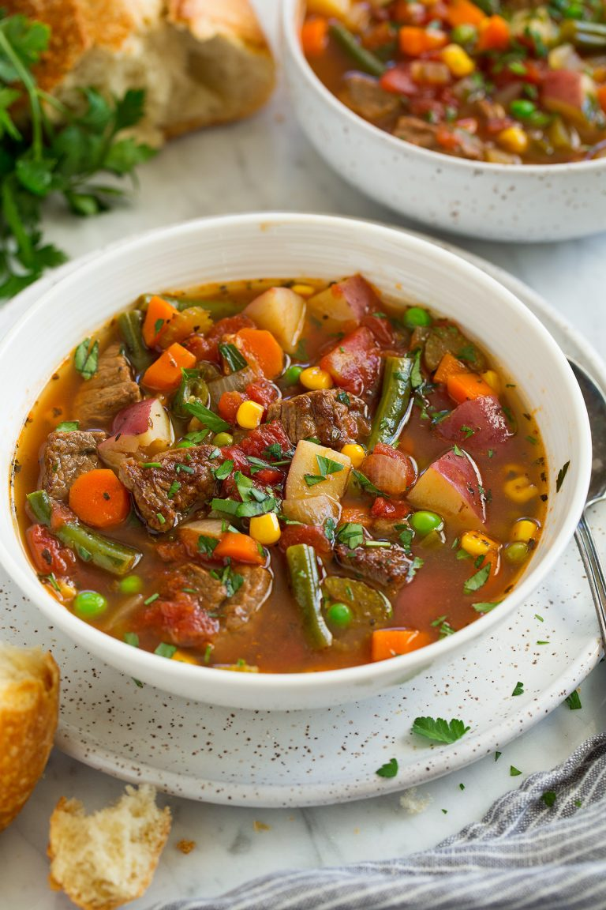

Vegetable Beef Soup (Fall apart beef!)
A hearty Vegetable Beef Soup with melt-in-your-mouth slow cooked chunks of beef, potato and vegetables simmered in a herb infused savoury broth. You’ll love how the broth of this beef soup recipe is slightly thickened so it’s like gravy and has extra flavour from a secret ingredient!
Ingredients
- 1.5 tbsp olive oil
- 500g/1 lb stewing beef
- 1/2 tsp salt and pepper
- 1 onion
- 3 garlic
- 2 celery
- 3 carrots
- 4 tbsp flour
- 2 1/2 cups (625ml) beef broth/stock
- 1 1/2 cups (375ml) dry red wine, Guinness beer or stout (Note 2)
▢1.5 cups (375ml) water
- 2 tbsp tomato paste
- 2 bay leaves
- 1 tsp thyme dried
- 1 cup frozen peas
- 2 potatoes
- 1 tbsp (15g) butter or oil
Instructions
- Heat 1 tbsp oil until very hot in a large, heavy based pot over high heat.
- Pat beef dry with paper towels, then sprinkle with salt and pepper.
- Brown beef aggressively in 2 or 3 batches, adding more oil if needed. Remove browned beef into a bowl.
- If pot looks dry, add a touch more oil.
- Add garlic and onion, cook for 2 minutes.
- Add carrot and celery, cook for 2 minutes or until onion is translucent.
- Stir in flour, then slowly pour in beef broth while constantly stirring.
- Add beer, water, tomato paste, bay leaves and thyme, stir well. Then add the beef back in.
- Cover, adjust heat to medium low so it's bubbling gently. Simmer 1 hr 15 min or until beef is pretty tender.
- Add potatoes and peas, simmer for a further 20 minutes without the lid. Add cooked mushrooms in the last 5 minutes.
- The soup is ready when the potatoes are cooked and beef is very tender
- Adjust salt and pepper to taste (I like lots of pepper in this!).
- Ladle into bowls. Sprinkle with parsley and serve with crusty bread if desired. Try quick Cheesy Garlic Bread or super easy Irish Soda Bread!
- Melt butter in a large skillet over medium high heat. Add mushrooms and cook for 5 minutes until browned. Sprinkle with salt and pepper.